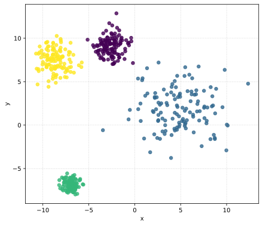
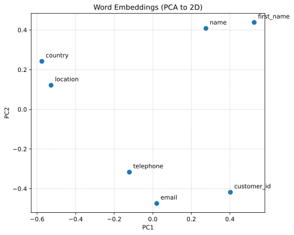

Context:
┌─────────────────────────────────────────────────────────────────────────────────────────────────────────────────┐
│ DATA LAKE │
└─────────────────────────────────────────────────────────────────────────────────────────────────────────────────┘
┌──────────────────────────┐ ┌────────────────────────────┐ ┌───────────────────────────┐ ┌───────────────┐
│ bucket: dept-a │ │ bucket: dept-b │ │ bucket: shared │ │ bucket: ... │
│ (sales) │ │ (support) │ │ (reference) │ │ │
│ │ │ │ │ │ │ │
│ /customers/ │ │ /customers/ │ │ /geo/ │ │ │
│ ├─ customers_part1.csv | │ ├─ customers_v2.json │ │ ├─ countries.xlsx │ │ │
│ ├─ customers_part2.csv | │ └─ preferences.csv │ │ └─ continents.parquet │ │ │
│ └─ README.md │ │ │ │ │ │ │
│ │ │ /tickets/ │ │ /products/ │ │ │
│ /sales/ │ │ ├─ tickets_2023.csv │ │ ├─ products_v1.json │ │ │
│ ├─ sales_part1.csv │ │ └─ tickets_2024.csv │ │ └─ products_v2.json │ │ │
│ ├─ sales_part2.csv │ │ │ │ │ │ │
│ ├─ sales_part3.csv │ │ /exports/ │ │ /dictionaries/ │ │ │
│ └─ sales_part4.csv │ │ └─ customer_dump.parquet | | └─ country_codes.csv │ | │
│ │ │ │ │ │ │ │
│ /.../ │ │ /.../ │ │ /.../ │ │ │
│ └─ ... │ │ └─ ... │ | └─ ... | | |
│ │ │ │ │ │ │ │
│ /logs/ │ │ /logs/ │ │ /schemas/ │ │ │
│ └─ ingestion.log │ │ └─ api_events.log │ │ └─ inferred_schema.yaml | │ |
└──────────────────────────┘ └────────────────────────────┘ └───────────────────────────┘ └───────────────┘Objectives: assess and organize the data lake to produce unified data assets ready for downstream analytics.
Which problems do you see?
Data lakes collect data from different sources (e.g., departments)
Files may have:
Users need to find and integrate relevant data but they don’t know:
… and more
/home/datalake/data/bronze/:
department_a department_b
/home/datalake/data/bronze/department_a:
countries.xlsx customers products sales
/home/datalake/data/bronze/department_a/customers:
customers_part1.csv customers_part2.csv
/home/datalake/data/bronze/department_a/products:
products_a.json products_b.json
/home/datalake/data/bronze/department_a/sales:
sales_part1.csv sales_part2.csv sales_part3.csv sales_part4.csv sales_part5.csv
/home/datalake/data/bronze/department_b:
customers products reviews
/home/datalake/data/bronze/department_b/customers:
customers_v2.csv
/home/datalake/data/bronze/department_b/products:
products_c.json
/home/datalake/data/bronze/department_b/reviews:
product_reviews.csvFor each file, read the first rows to collect column names
Examples:
customer_id,first_name,email,country,telephoneorder_key,cust_id,product_id,quantity,date,amount_usdWhat about .json and .xlsx files?
For each file, read the first rows to collect column names
Examples:
customer_id,first_name,email,country,telephoneorder_key,cust_id,product_id,quantity,date,amount_usdProblems:
.json and .xlsx files?We can use clustering to group files with similar schemas

How do we define the schema similarity (or distance)?
Example:
- \(Schema_A = \{`id', `name', `email'\}\)
- \(Schema_B = \{`id', `fullname', `mail'\}\)
Measures overlap of sets: \(J(Schema_A, Schema_B) = \frac{|Schema_A \cap Schema_B|}{|Schema_A \cup Schema_B|}\)
Example:
- \(Schema_A = \{`id', `name', `email'\}\)
- \(Schema_B = \{`id', `fullname', `mail'\}\)
- \(|Schema_A \cap Schema_B| = |\{`id'\}| = 1\)
- \(|Schema_A \cup Schema_B| = |\{`id', `name', `email', `fullname', `mail'\}| = 5\)
- \(J(Schema_A, Schema_B) = \frac{1}{5} = 0.2\)
What do you think about this solution?
Capture spelling variations in column names
Example:
- \(Schema_A = \{`id', `name', `email'\}\)
- \(Schema_B = \{`id', `fullname', `mail'\}\)
- \(|Schema_A \cap Schema_B| = |\{`id', `email'\}| = 2\)
- \(|Schema_A \cup Schema_B| = |\{`id', `name', `email', `fullname'\}| = 4\)
- \(J_{fuz}(Schema_A, Schema_B) = \frac{2}{4} = 0.5\)
Compute the Fuzzy Matching similarity between files
Cluster files using Agglomerative Clustering
Cluster 3:
Intersection schema: {'telephone', 'first_name', 'customer_id', 'country', 'email'}
Average Jaccard similarity: 1.00
File: /home/datalake/data/bronze/department_a/customers/customers_part1.csv Schema: ['telephone', 'first_name', 'customer_id', 'country', 'email']
File: /home/datalake/data/bronze/department_a/customers/customers_part2.csv Schema: ['telephone', 'first_name', 'customer_id', 'country', 'email']
Cluster 1:
Intersection schema: {'currency', 'price', 'product_id', 'name', 'type'}
Average Jaccard similarity: 0.75
File: /home/datalake/data/bronze/department_a/products/products_a.json Schema: ['currency', 'price', 'product_id', 'name', 'type']
File: /home/datalake/data/bronze/department_a/products/products_b.json Schema: ['currency', 'material', 'price', 'product_id', 'name', 'color', 'type', 'stock']
File: /home/datalake/data/bronze/department_b/products/products_c.json Schema: ['currency', 'price', 'product_id', 'name', 'type']Apply unified schema to all files in a cluster
Concatenate into a single governed dataset
Cluster1.csv (merged data)Cluster1_schema.json (mapping for transparency)Fuzzy Matching does not capture semantic similarity between column names

Example of word embeddings Computing the embeddings:
{ 'telephone': [-0.11484879 0.06089507 0.01468573 ... ], 'first_name': [-0.11216891 0.04061386 -0.01322238 ... ], 'customer_id': [-0.06831077 0.03470041 -0.02761879 ... ], ... }Computing the similarity between embeddings:
sim_cos('country', 'location'): 0.63932264, sim_cos('location', 'name'): 0.39198124, sim_cos('name', 'first_name'): 0.6186802Example:
- \(Schema_A = \{`id', `name', `email', `country'\}\)
- \(Schema_B = \{`id', `first_name', `mail', `location'\}\)
- \(|Schema_A \cap Schema_B| = |\{`id', `email', `name', `country'\}| = 4\)
- \(|Schema_A \cup Schema_B| = |\{`id', `email', `name', `country'\}| = 4\)
- \(J_{emb}(Schema_A, Schema_B) = \frac{4}{4} = 1.0\)
Within each cluster:
Table 1:
customer_id first_name country 1 Alice a@ex.com US 2 Bob b@ex.com UK Table 2:
customer_id name location 1 Chuck c@mail.com United States 2 Dan d@mail.com United Kingdom Unified table:
customer_id first_name country 1 Alice a@ex.com US 2 Bob b@ex.com UK 1 Chuck c@mail.com United States 2 Dan d@mail.com United Kingdom
Are we done?
Matteo Francia - Big Data and Cloud Platforms (Module 2) - A.Y. 2024/25